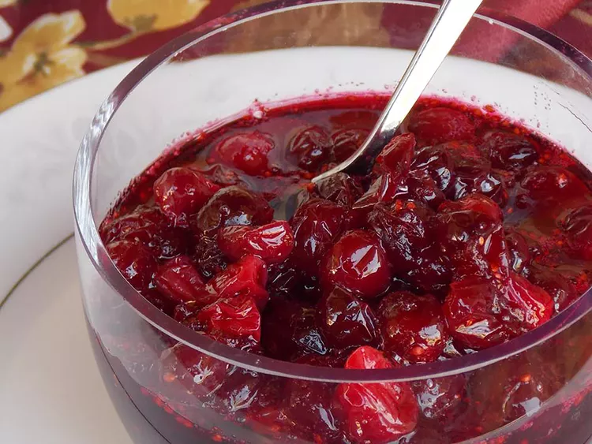

Fresh Cranberry Sauce

Fresh cranberry sauce is a must for your Thanksgiving dinner. This recipe
is easy to make in just 20 minutes with 3 ingredients: fresh cranberries,
sugar, and water. Add some grated orange zest before serving for an extra
boost of flavor.
Ingredients
- 1 cup water
- 1 cup white sugar
- 1 (12 ounce) package fresh cranberries (such as Ocean Spray)
Steps
-
Bring water to a boil in a saucepan; add sugar and cook until sugar is
dissolved, about 5 minutes.
-
Stir cranberries into the saucepan and bring to a boil. Reduce heat to
low, and simmer until cranberries have popped and sauce is chunky, about
10 minutes or longer for desired consistency. The longer you cook it,
the less chunky it will be.
-
Pour sauce into a serving dish or jars and cover until ready to use; the
pectin in the cranberries will make the cranberry sauce gel as it cools.
- Mix cranberry sauce with a fork before serving.
Back To Home